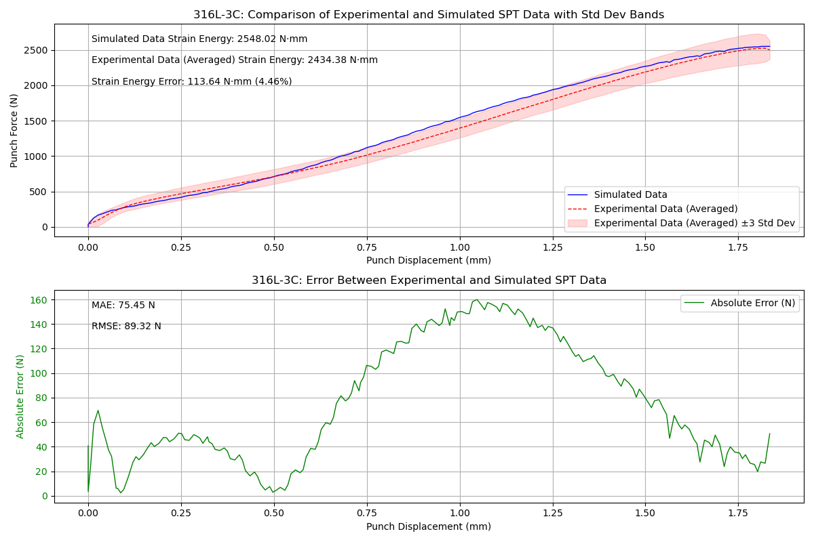
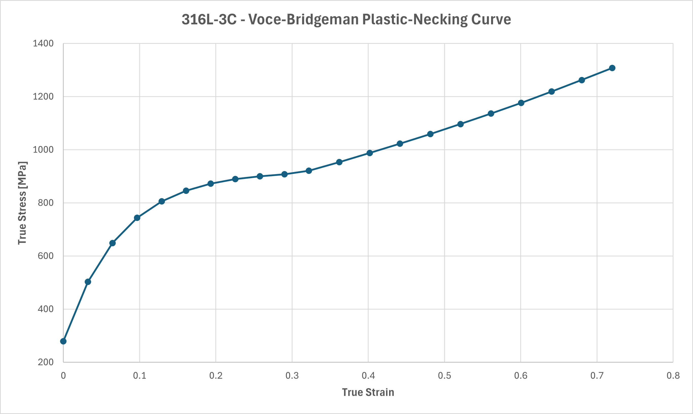

Capstone: Small Punch Test Refinement
The project's thorough execution and high-quality outcomes garnered significant academic recognition. Dedicated to advancing the Small Punch Test (SPT), it estimates mechanical properties from miniature metallic specimens. Using an ANSYS-based finite element model (FEA), the study simulates SPT to extract stress, strain, and energy metrics, focusing on ductile material behavior. Validated against experimental data for materials like 750C-316L and 2205 Duplex, the model achieves high accuracy (strain energy errors <5%, failure displacement error <2%). For brittle materials, limitations arise from Profilometry-based Indentation Plastometry (PIP) data translation. The model provides detailed force-displacement curves and transient metrics, enabling robust material characterization. This work enhances SPT reliability, reduces material waste, and lowers engineering system maintenance costs.
Relevant Skills
Outcomes
FEA Model - ANSYS Static Structural
An ANSYS Static Structural Model applicable to isotropic ductile metals, developed in accordance with ASTM E3205-20.

FEA Model - Validation
The FEA model is in the process of being validated through specimen force-displacement curve comparison. A validation example for 316L is presented:
Material Model Prediction Method
ANSYS Material Models are created with isotropic and multilinear hardening models. Creation of these models begin with Profilometry-based Indentation Plastometry (PIP) Tests, employed to retrieve basic material properties. Basic material properties are then used in a Voce-Bridgman equation I dervied to predict plastic-necking true stress-strain behavior:
\[ \sigma = \begin{cases} \sigma = \sigma_S - (\sigma_S - \sigma_Y) \exp \left( \frac{-\varepsilon}{\varepsilon_0} \right), & \varepsilon_0 < \varepsilon \leq \varepsilon_{\text{neck}} \\[10pt] \sigma = \sigma_S e^{\varepsilon - \varepsilon_{\text{neck}}} \left[ \left( 1 + \frac{2}{\Psi (\varepsilon - \varepsilon_{\text{neck}})} \right) \ln \left( 1 + \frac{1}{2} \Psi (\varepsilon - \varepsilon_{\text{neck}}) \right) \right]^{-1}, & \varepsilon_{\text{neck}} < \varepsilon \end{cases} \]
Where, \(\varepsilon_{\text{neck}}\) is necking strain, and \(\Psi_{\text{}}\) is an experimentally determined material property.
Given, \(\sigma_Y\), \(\sigma_S\), and \(\varepsilon_{\text{0}}\), a plastic-necking material model can be created for use in FEA, for example:
